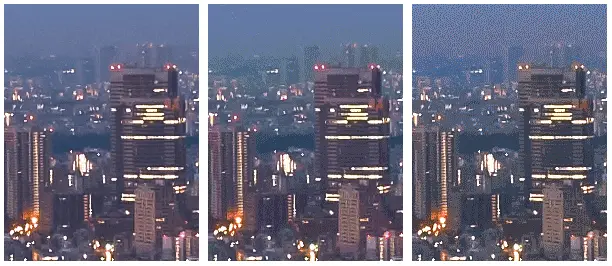

短答
图片压缩减少字节，推得太过时会留下可见伪影。
产品边缘变成方块，并不是任何有用意义上更快的主视觉。买家看不清接头，最大绘制可能略早，但图片已经不再胜任。SEO 健康可以同时记下重量和损伤。它不会为以后每一次上传选定一个数字质量滑杆。
定义
本页的伪影图是教学特写，不是某位客户的前后对比。较新的静态图片编码常常在同样字节下更好地保住边缘，但模板仍然需要人看一下产品边界。请求很低质量数字的 CDN 参数，应该在主视觉上复查，而不是只看缩略图。
页面基础里包括什么
按模板实际请求的质量检查主视觉，拒绝破坏产品边缘的设置。
缩略图可以忍受比铺满首屏的图片更重的压缩。两者共用一个全局质量数字，就会让主视觉受损或让缩略图仍然很重。审计样例是同一模板的一条主视觉 URL 和一条缩略图 URL。记录里不属于某个通用百分比。

要检查什么
- 主视觉质量经过目视检查，而不只看文件大小
- 缩略图允许使用更重的单独设置
- 没有把一个质量数字用到每个位置
- 一条主视觉 URL 和一条缩略图 URL
- 没有把编造的百分比当成标准引用
一个结构示例
流水线把每次上传都导出成很低的质量，因为上一季的主视觉太重。螺纹消失在方块里。修复是主视觉阶梯上更高的质量加上更小的像素尺寸，而不是退回相机原图。流水线改动是模板级的，一条样例就能暴露它。
它不声称什么
更清晰的压缩图不保证排名或引用。
Mika Visibility 把它归到哪里
Mika Visibility 把标题、标题层级、语言和媒体基础归在 SEO 健康的内容与结构检查里。它们帮助页面被理解。它们不是 SEO 增长——增长问的是还缺什么覆盖——它们也不保证回答产品会引用这个页面。
伪影特写是教学图片，不是关于某个具名站点的证据。
常见问题
除了文件大小，压缩还冒什么风险？
图片压缩减少字节，推得太过时会留下可见伪影。
应该在哪里复查质量？
按模板实际请求的质量检查主视觉，拒绝破坏产品边缘的设置。
更清晰的图片能保证排名吗？
更清晰的压缩图不保证排名或引用。
下一步
做一次结构化的 SEO + GEO 审计，查看健康发现、增长缺口和可以执行的蓝图。
更清晰的实体、答案、证据和上下文，会让页面更容易被理解与引用。任何回答产品中的结果都不作保证。